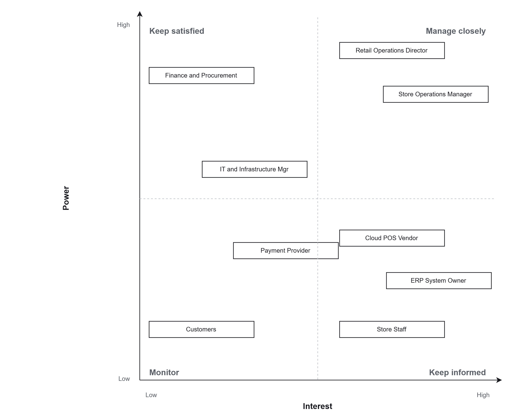
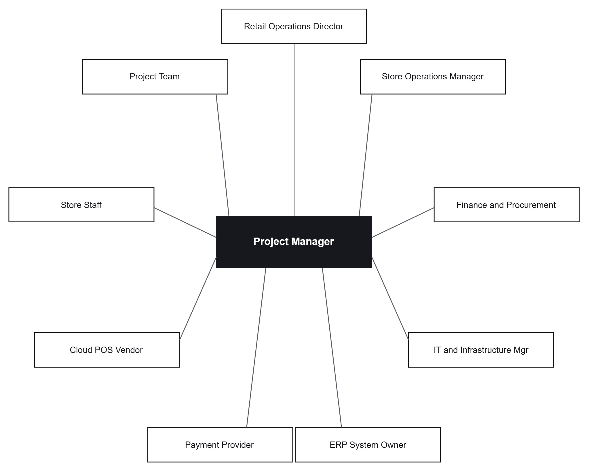

Section 2 of 9
Project Charter and Stakeholders
Section owner: Resham Thapa
The charter sets the objectives, scope and limitations, and the stakeholder work shows who is involved and how.
Charter summary
This project is approved to build, test, pilot and roll out a cloud POS platform to the first region prior to the trading peak. Assumptions include a vendor platform in place on time, store networks that are satisfactory after checks, and staff released for training. The main constraints are the fixed trading freeze, the budget limit, and a single pilot window.
Stakeholder register
| Stakeholder | Role | Power | Interest | Strategy |
|---|---|---|---|---|
| Retail Operations Director | Executive sponsor | High | High | Manage closely |
| Store Operations Manager | Rollout owner | High | High | Manage closely |
| IT and Infrastructure Manager | Platform and network | High | Medium | Keep satisfied |
| Finance and Procurement | Budget and contracts | High | Low | Keep satisfied |
| ERP System Owner | Legacy integration | Medium | High | Manage closely |
| Cloud POS Vendor | Platform supplier | Medium | High | Keep informed |
| Payment Provider | Gateway and certification | Medium | Medium | Keep satisfied |
| Store Staff (cashiers) | End users | Low | High | Keep informed |
| Customers | Service recipients | Low | Low | Monitor |
Power and interest map

Image slot: images/dio_power_interest.pngStakeholder relationships

Image slot: images/dio_stakeholder_map.pngKey power and key interest stakeholders are managed closely with fortnightly updates to the steering group. Others receive targeted information matched to their interest, so effort goes where it makes a difference.